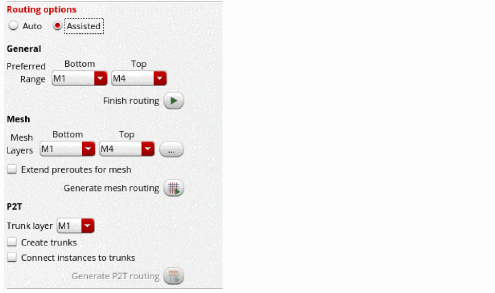

Finishing Routing for Signal Nets
When routing a net that is not complex or when it is not necessary to perform detailed routing patterns, using the Finish routing feature is a quick solution. To do this:
- Open a design in Layout MXL.
- Open the Navigator assistant and select Objects – Nets.
- Select a net in the Navigator assistant.
-
Choose Window – Assistants – Routing.
Alternatively, right-click anywhere on the layout window menu bar and choose Assistants – Routing. -
Click the Route tab in the Routing Assistant.
 - Select Assisted as the routing option from the Routing Options section in the Route tab of the Routing Assistant.
- Ensure that the scope of the nets is always set as Selected since assisted routing routes only one selected net at a time.
- Click Selected to define the scope of nets for routing.
- Specify the preferred routing layer range from the Bottom and Top drop-down list.
-
Click Finish routing
 .
.
The router completes the routing of the selected net.
Routing errors are reported in the CIW, which might be hidden underneath other windows. The CIW can be raised automatically by setting the following environment variable:envSetVal("ui" "raiseCIWonError" 'boolean t)
Related Topics
Generating Width Spacing Patterns for Device-level Routing
Configuring Device-Level Router Settings
Checking Layout Routability after Generating Grids and Running Device Placer
Return to top